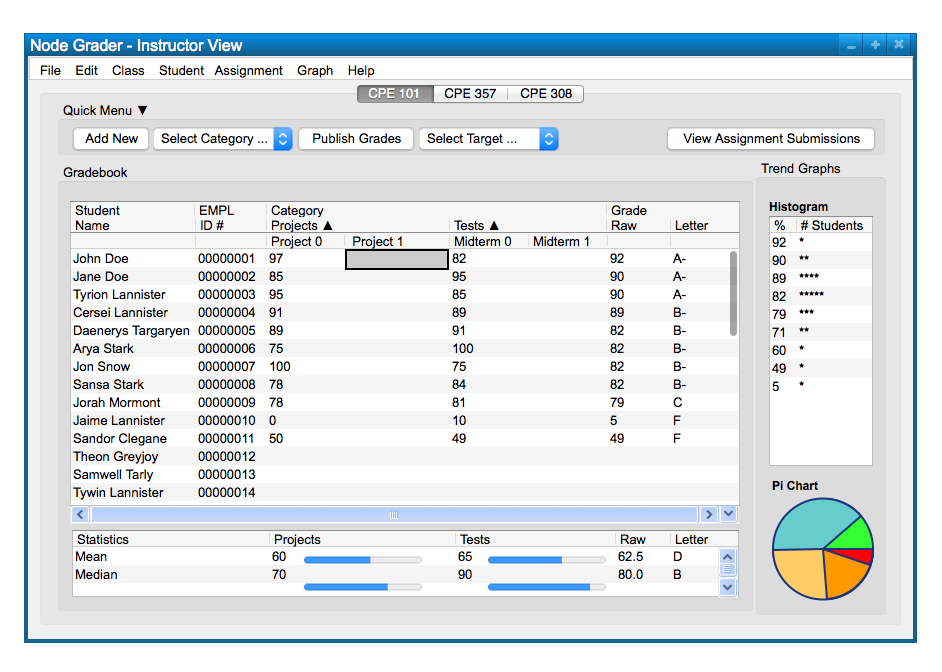

The Instructor can enter scores easily by double clicking on the cell they would like to enter. Figure 1 shows the effect of double clicking on the first row for 'Project 1' scores

Figure 1: Double Clicked Cell To Enter Score
After the user types in the score they would like to submit, they simply press 'enter' and the score will be saved. The table will be updated with the score, shown in Figure 2.
Figure 2: Instructor View With Updated Score